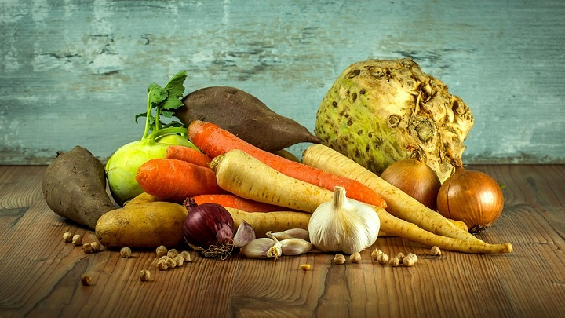
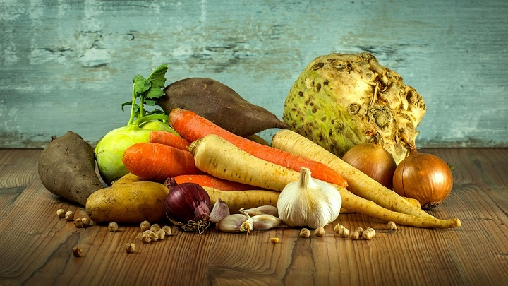

Herbal Tea's
 


Herbal teas, also known as herbal infusions and less commonly called tisanes , are beverages made from the infusion or decoction of herbs, spices, or other plant material in hot water. Oftentimes herb tea, or the plain term tea, is used as a reference to all sorts of herbal teas. If you want to find out more about this click here